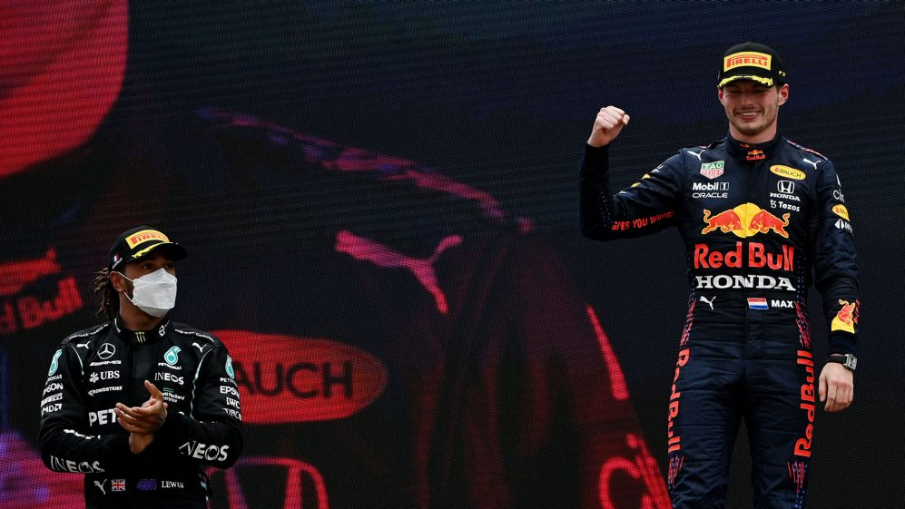

LASTEST NEWS
It’s advantage Verstappen after France but can Hamilton hit back in Red Bull’s backyard?
Up until last year, the Red Bull Ring has become a happy hunting ground for the venue’s owners Red Bull, with Max Verstappen triumphing in 2018 and 2019. But when they were expected to triumph at the Austrian double header in 2020 – they didn’t deliver the goods. So what Red Bull can we expect this year? And will Mercedes rebound from their strategic defeat in France?
Red Bull favourites for victory
The paddock is buzzing with excitement about the title battle that is brewing with increasing intensity between Mercedes and Red Bull and Lewis Hamilton and Verstappen. For the first time in years, we are arriving at Grands Prix not knowing who is going to win. It’s the holy grail. Mercedes have long said that Red Bull have the best package this year, and after their defeat to four-time world champions in France, there’s a growing belief that the RB16B – and the way Red Bull are working operationally – is the best overall package. But the margins are fine.